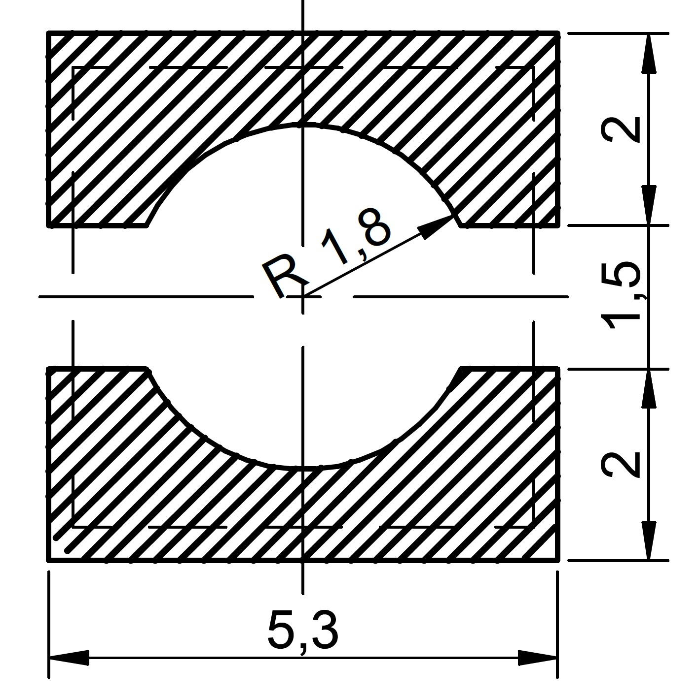
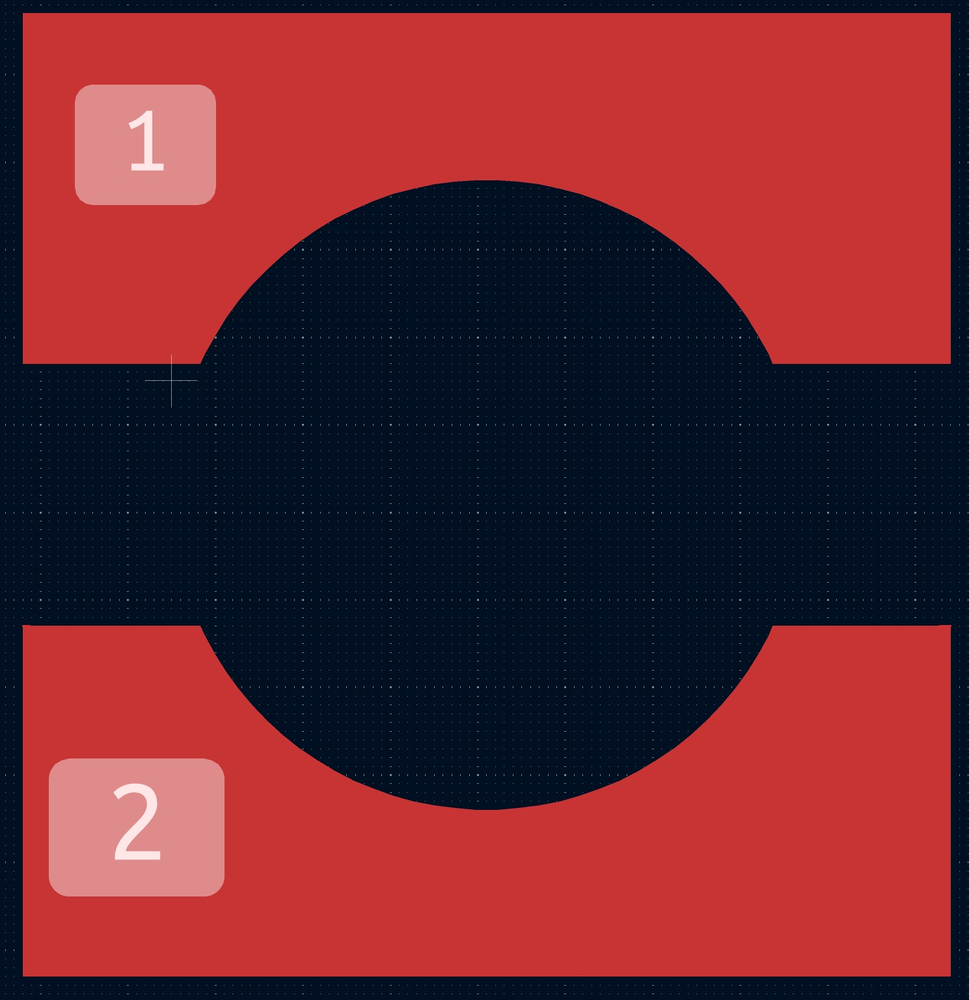
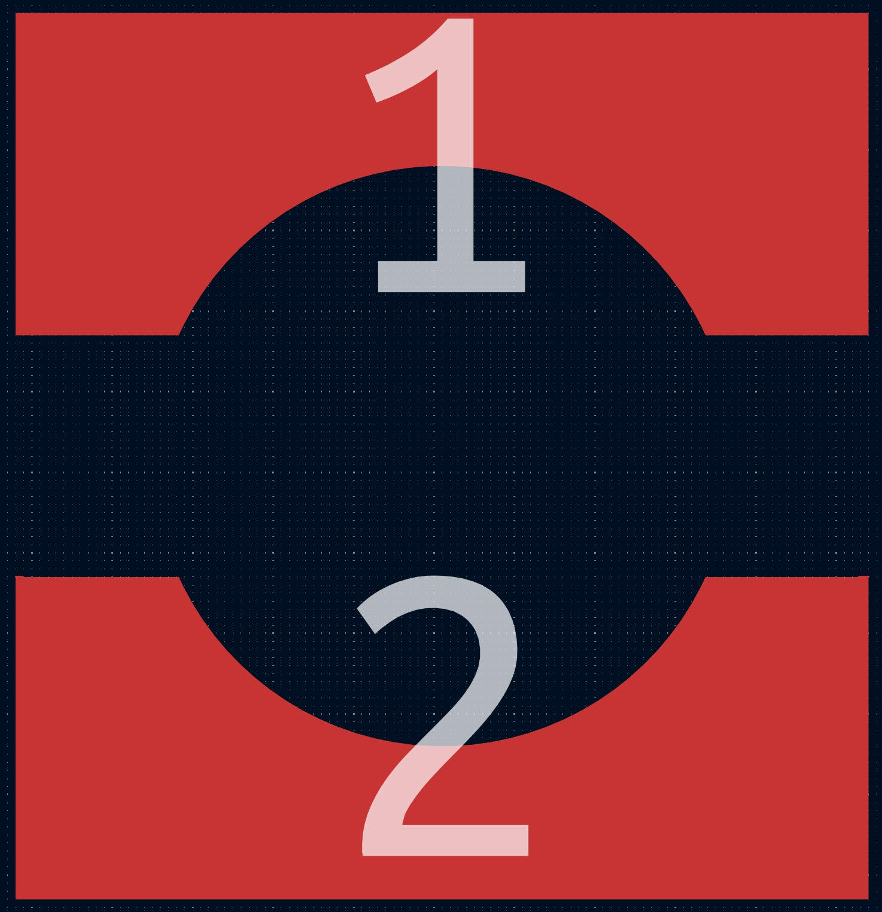

Create non-rectangular pad shapes in KiCad 9
- Create sketch in Fusion with the dimension from the datasheet


- Export it by right-clicking on the sketch as a .dxf file. In the export menu uncheck all three boxes.
- Create new footprint in KiCad
- Import DXF: File → Import → Graphics (CTRL+SHIFT+F). Leave the import scale as 1 and uncheck "group supported items".

- Select all the shapes belonging to one pad
- Right-click → "Create from selection" → "Create polygon from selection…" and use the option "Use centerlines"

- Change created pads to copper

- Create new pads and fit them inside the shape

- Right-click on the pad and select "Edit Pad as Graphic Shapes" or press CTRL+E
- Press CTRL+E to leave the Pad Edit Mode. The pad now should have the right shape.
